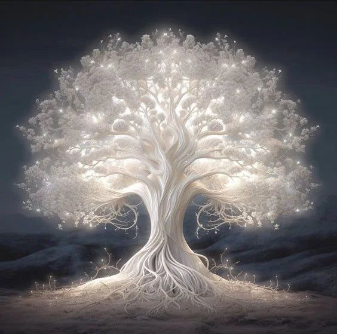
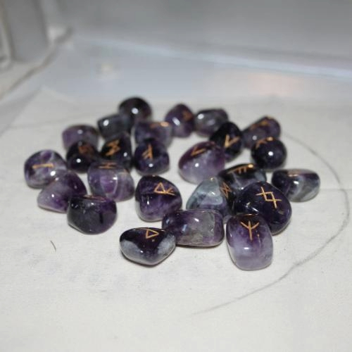

What is Rune Casting?

In some modern pagan traditions, divination is done by Casting runes. Much like reading Tarot cards, rune casting isn’t Fortune-telling or predicting the future.
Instead it’s a guidance tool. Runes won’t give exact answers, like what day you’ll die or The name of the person you’re going to marry.
History and Orgins!
The runes are an ancient alphabet, referred to as the Futhark, which was found in Germanic and Scandinavian countries.
Norse legend, the runic alphabet was discovered by Odin himself, and so the runes are more than just a collection of symbols Of great universal forces, and the gods themselves.
How to Cast Runes!
You can get the answers to your life-related questions in spiritual, as well as conceptual manner.
To get focus on you: Many people don’t take their life seriously. They dont work, study, concentrate on things perfectly because there are so many thoughts which were going in their mind which distracts them in many ways, thought Tarot Card Reading one can know the reason behind those problems and make proper focus in their life.
Learning Tarot Card Reading will make you wiser and smarter day by day